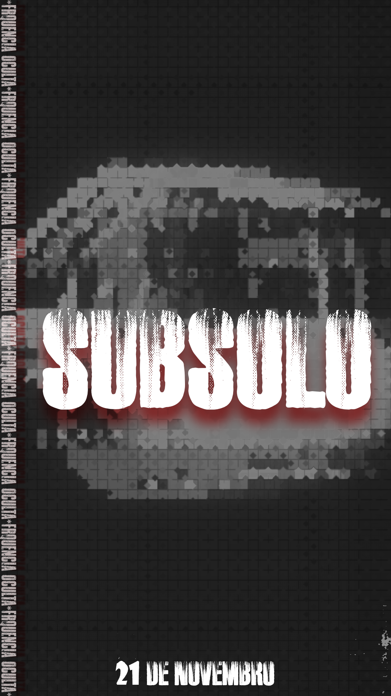
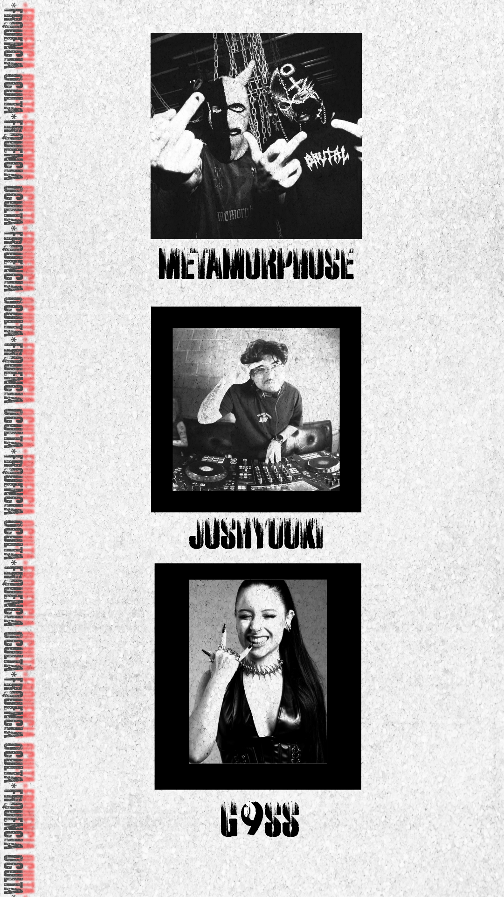
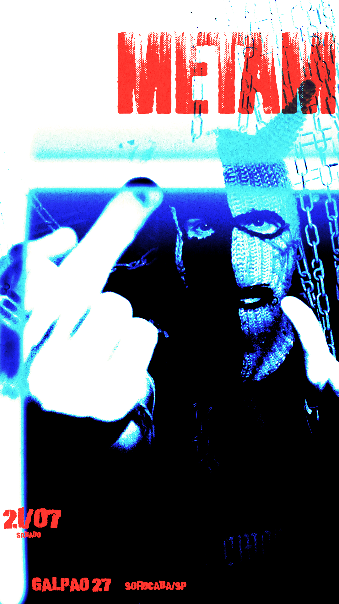
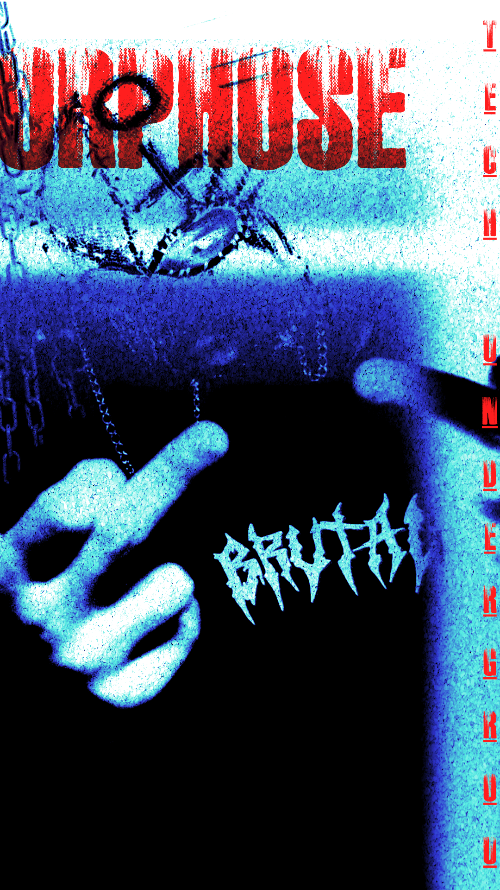

DIREÇÃO DE ARTE · DESIGN GRÁFICO
Subsolo.
Um projeto visual que explora a estética underground por meio de experimentações gráficas, imagens e composição.




DIREÇÃO DE ARTE · DESIGN GRÁFICO
Um projeto visual que explora a estética underground por meio de experimentações gráficas, imagens e composição.



